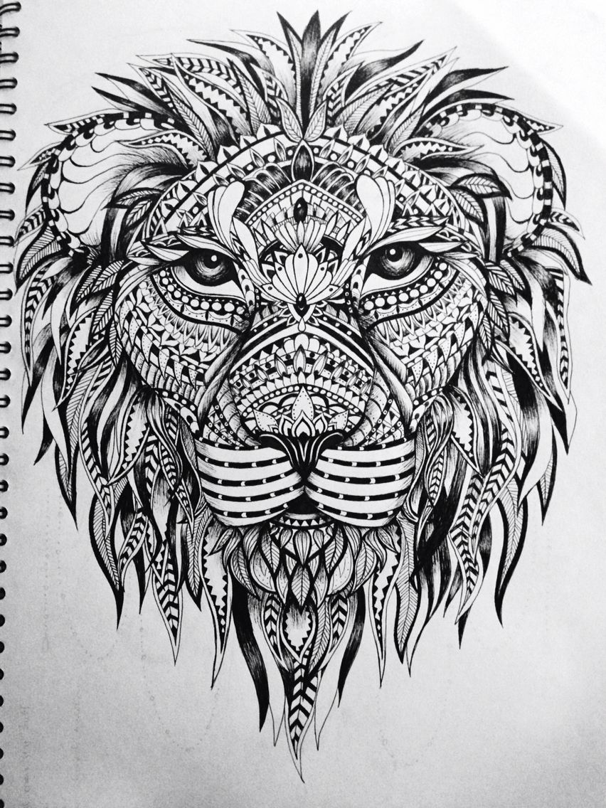
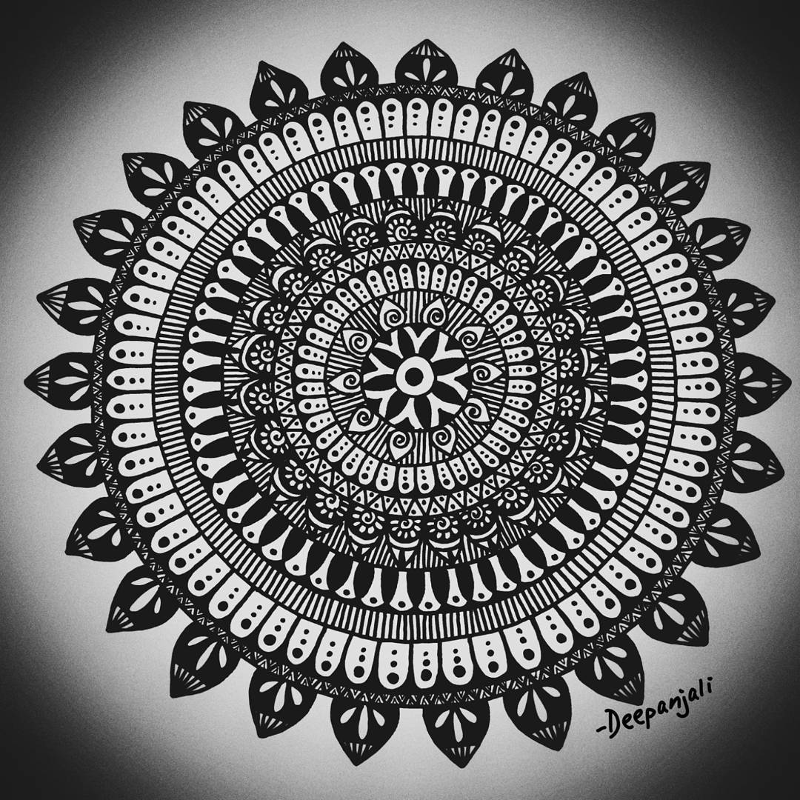
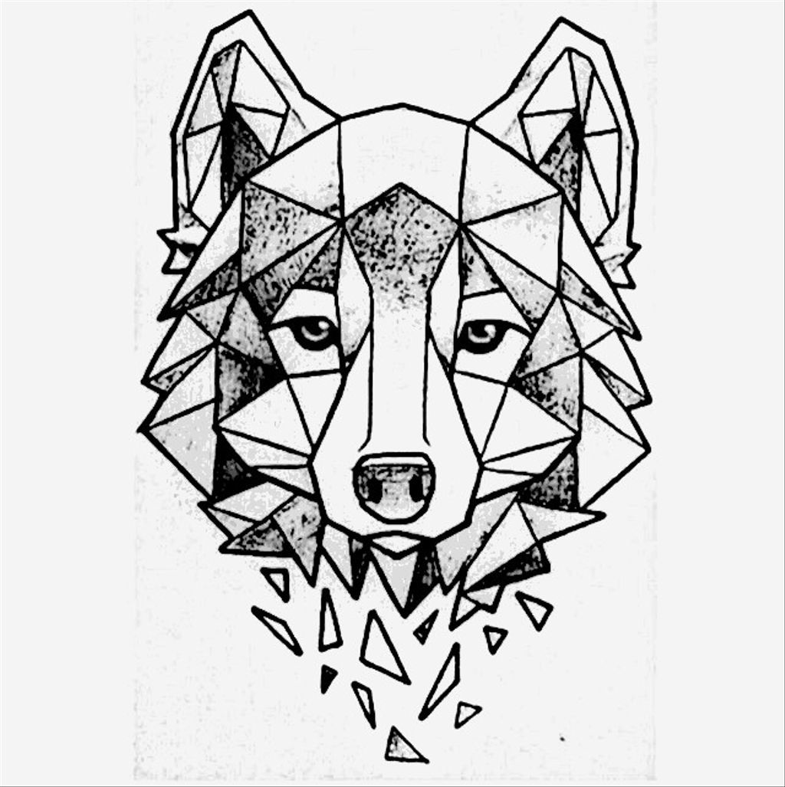

Drawing is at the heart or soul of an artist’s way to express themselves. As a communication tool, drawing is a creative way to express the feelings and thoughts of an artist or designer. A drawing can be a sketch, a plan, a design, or graphic representation made with the help of pens, pencils, or crayons. The final result depends upon its nature and purpose.
The Zentangle Method is an easy-to-learn, relaxing, and fun way to create beautiful images by drawing structured patterns. We call these patterns, tangles. You create tangles with combinations of dots, lines, simple curves, S-curves and orbs. These simple shapes are the "Elemental Strokes" in all Zentangle art. These patterns are drawn on small pieces of paper called "tiles." We call them tiles because you can assemble them into mosaics.Zentangle art is non-representational and unplanned so you can focus on each stroke and not worry about the result.
The literal meaning word Mandala means circle, and circle mandalas are also one of the most commonly available form of mandalas. Circles have very powerful significance in countless religions and traditions, primarily Hinduism and Buddhism. We first saw their emergence in regions across the Himalaya and India, where people used the artistic expression of mandalas to form symbolic relationships between the universe and the spirit. Ancient Hindu scriptures depict mandalas as a period of creativity, of powerful existence, and a symbol of deeper connection with the self and the universe at large. In modern day, mandalas have become a popular symbol of meditation, which aids in enhancing focus, silencing thoughts while meditating, combatting stress and anxiety, appreciating the beauty of nature, and forming a greater connection with oneself.
It’s related to the geometric shapes/forms found in the structure a painting. In Art Terms (of design or ornamentation) ,composed predominantly of simple geometric forms, such as circles, rectangles, triangles, etc. Along with the “Golden Mean” & Fibonacci curve, it’s use to be aesthetically appealing to the viewer and hopeful collector.
